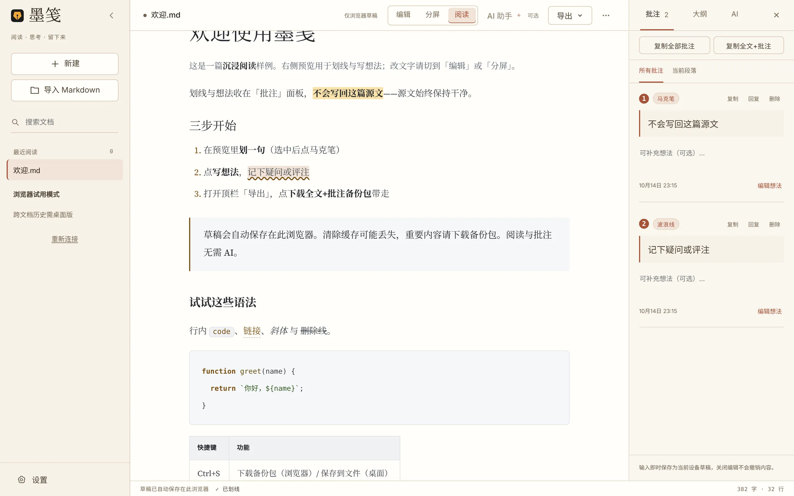
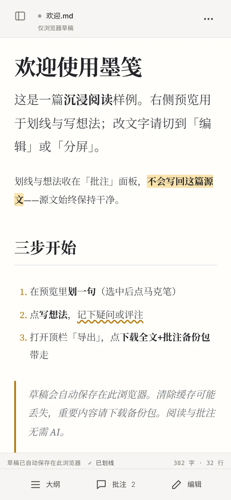
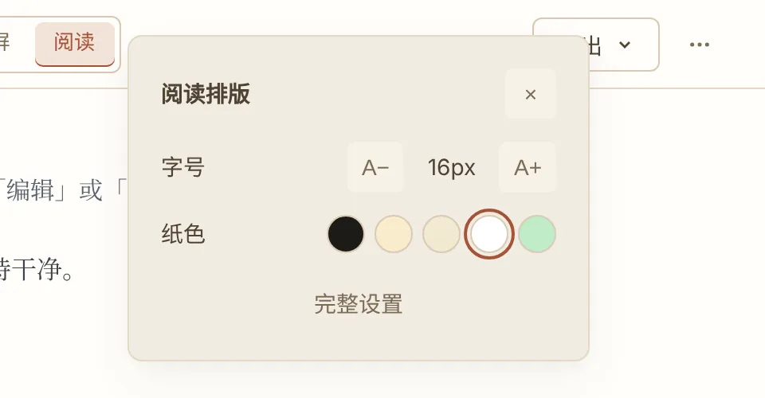
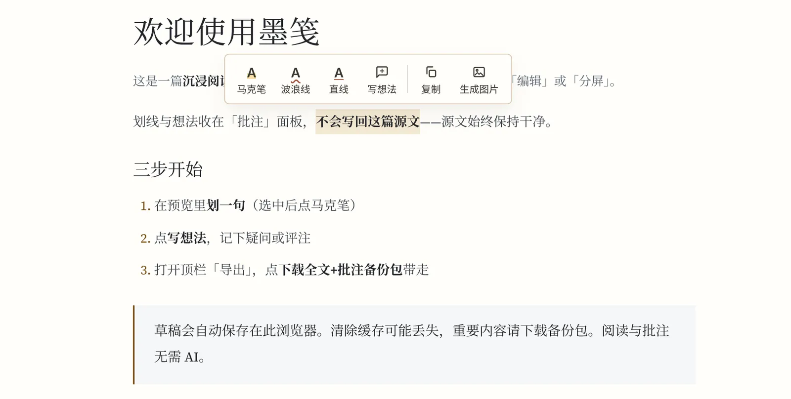
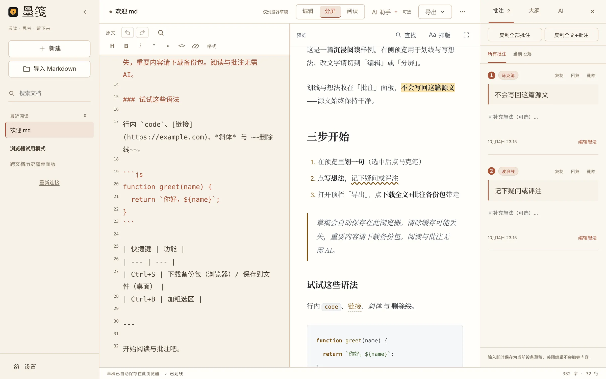
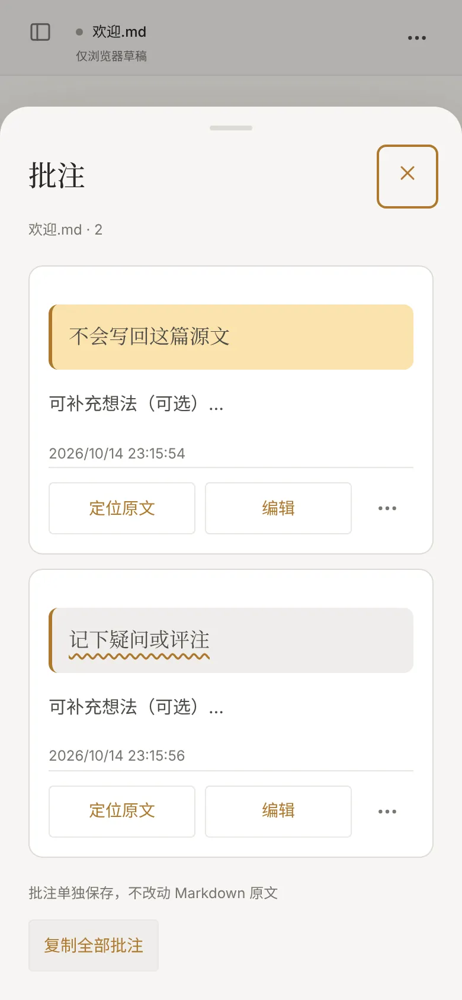

为读而设计
楷体、5 种纸色、专注阅读，工具退场只留正文。
阅读 · 思考 · 留下来
一个为阅读而做的 Markdown 工具。打开浏览器就能读，划线和想法另存一份，你的 .md 始终干净。
免注册 · 当前免费 · 内容缓存在当前浏览器，请记得导出备份


楷体、5 种纸色、专注阅读，工具退场只留正文。
马克笔、波浪线、直线、想法，全部收在批注面板。
长图、批注、全文+批注备份包，一次导出。
为读而设计
为长时间阅读调过的纸色、字体和字号。读的时候，工具栏可以整个退场。


批注在旁，原文不动
划线和批注另存一份。同一个 .md 读多少遍、批多少次，文件本身都不变。
欢迎.md原文 · 未改动欢迎.annotations.md批注 · 单独导出欢迎.annotations.json批注 · 结构化数据「批注」面板集中查看，点一条回到原处。
原文与阅读一一对应
切到「分屏」，改一处右边立刻更新；双击任一侧，另一侧定位到同一处。大纲让长文的结构一眼可见。

带走你的阅读
都在顶栏「导出」里。浏览器缓存可能被清除，重要内容请另存。
.png把预览保存成长图，可选带上批注。
.annotations.md · .json导出为 Markdown 或 JSON，放进你自己的笔记系统。
.zip一次归档；也可随时导入、导出 .md。
随处打开
手机浏览器里同样能划线、写想法。底部只有三个入口：大纲、批注、编辑。
macOS 与 Windows 安装包仅供测试，不是正式签名发布，也不可当作可对外分发的正式版。未签名包在 macOS 上可能被 Gatekeeper 拦截，在 Windows 上可能出现 SmartScreen「未知发布者」警告——这是预期行为，不是安装成功的证明。CI 冒烟不等于真机安装验收。
工程师侧签名/公证流水线骨架已就绪；正式 Developer ID、公证与 Windows 证书仍在账号持有人侧。在证书到位并完成真机验证前，请勿把下载入口当作正式分发。
从源码运行桌面端：
npm install npm run desktop

目前免费，无需注册。阅读、批注、导出都不收费；许可证限制的是商业用途，见下方「可以商用吗」。
不会。马克笔、波浪线、直线和想法只存在批注面板和单独的批注数据里，从不写回原文。导出的 .md 与导入时一致，批注另外导出为 .annotations.md 或 .annotations.json。
网页版的文档和批注保存在你当前浏览器的本地缓存里，不上传服务器。清除浏览器数据、换浏览器或换设备时不会自动带过去，重要内容请在「导出」里下载全文+批注备份包。
目前不能。批注可以导出，但导入批注和跨设备合并还没有做。现阶段建议在同一台设备、同一个浏览器里读完一篇。
手机浏览器打开就是阅读视图，选中文字即可划线或写想法。底部三个入口：大纲、批注、编辑——要改文字时点「编辑」，改完切回来。
Obsidian 擅长双链知识库和插件生态，Typora 擅长流畅地写。墨笺专注于把一篇 Markdown 读完，并把批注和原文分开放。它们可以并用。
有一个可选的 AI 助手，需要你在本地安装并登录 Claude Code 或 Codex CLI，或配置 Gemini API 密钥；服务商可能收费，墨笺不提供模型服务。阅读与批注完全不需要 AI。
桌面端还在测试阶段，安装包尚未做正式代码签名，macOS 或 Windows 可能弹出安全提示。不想处理这类提示，直接用网页版即可。
源码公开可见，采用 PolyForm Noncommercial 1.0.0 许可，允许非商业用途使用，不属于 OSI 定义的开源软件。商业使用需另行授权，具体以仓库内 LICENSING.md 为准。
都不是。墨笺不管理文件库、不做双链，也不支持多人协作。它是一个阅读工具：打开一篇、读完、批完、带走。
界面语言不会改变文档内容
返回首页阅读、编辑与批注无需配置 AI。
AI 与文档历史需要桌面版或本地 Agent Bridge。
在文档顶部的「导出」中上传到飞书或钉钉，使用本机已登录的连接器。